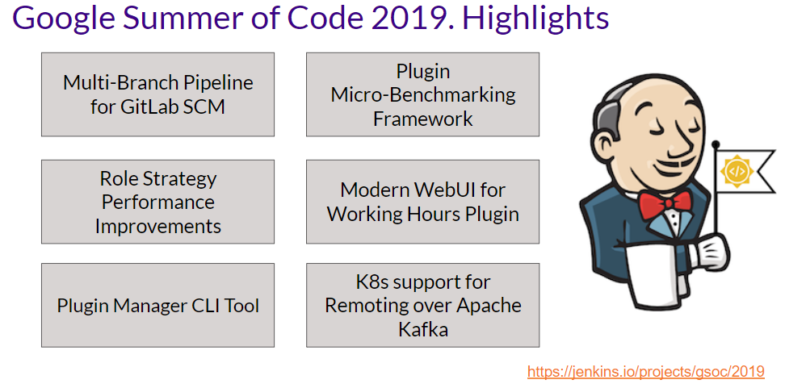
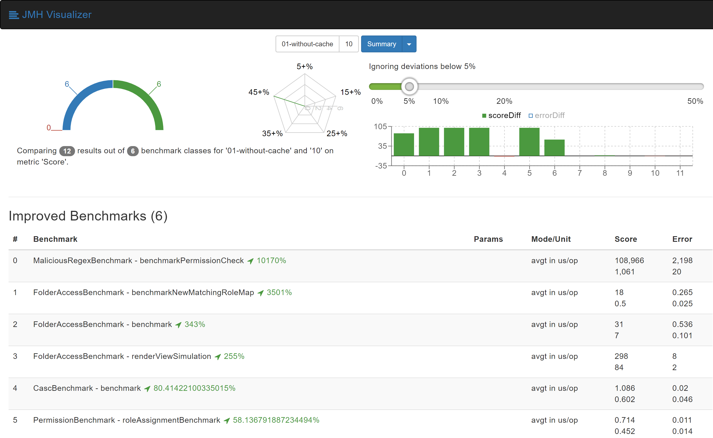
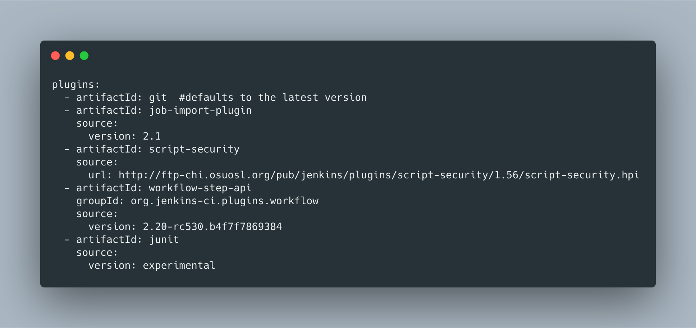
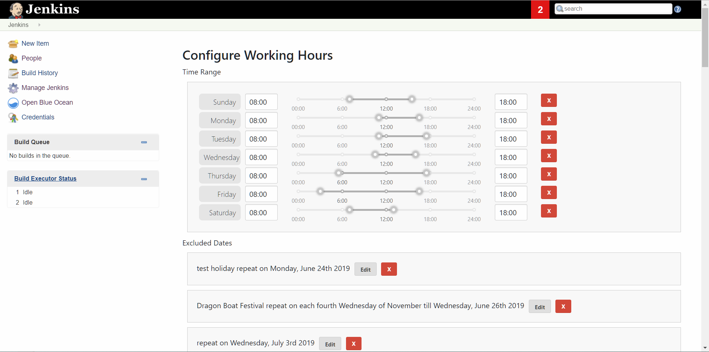
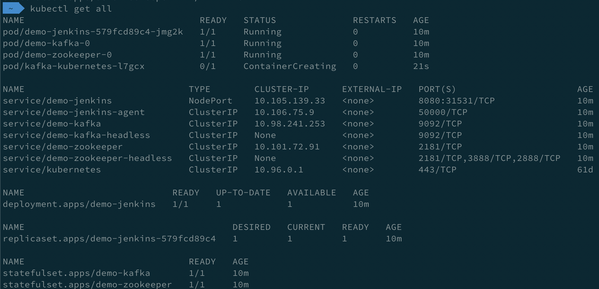
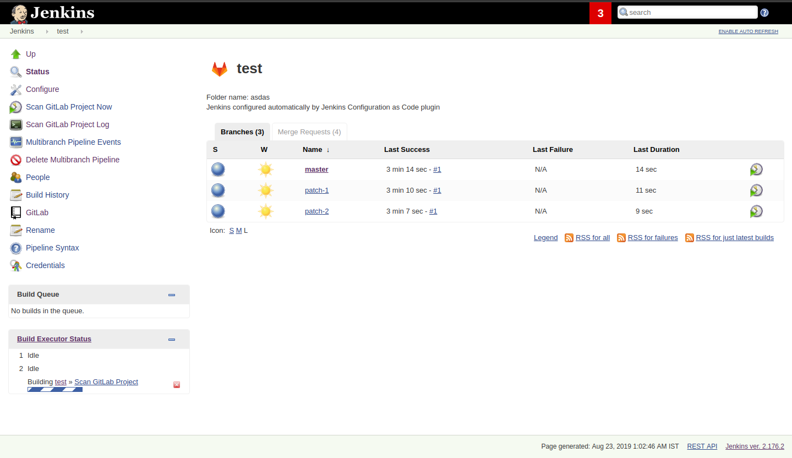
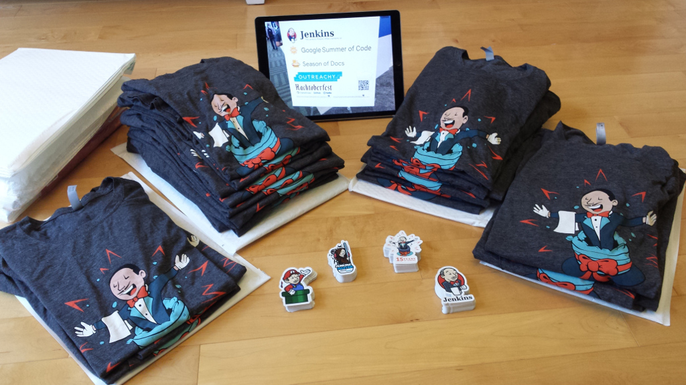
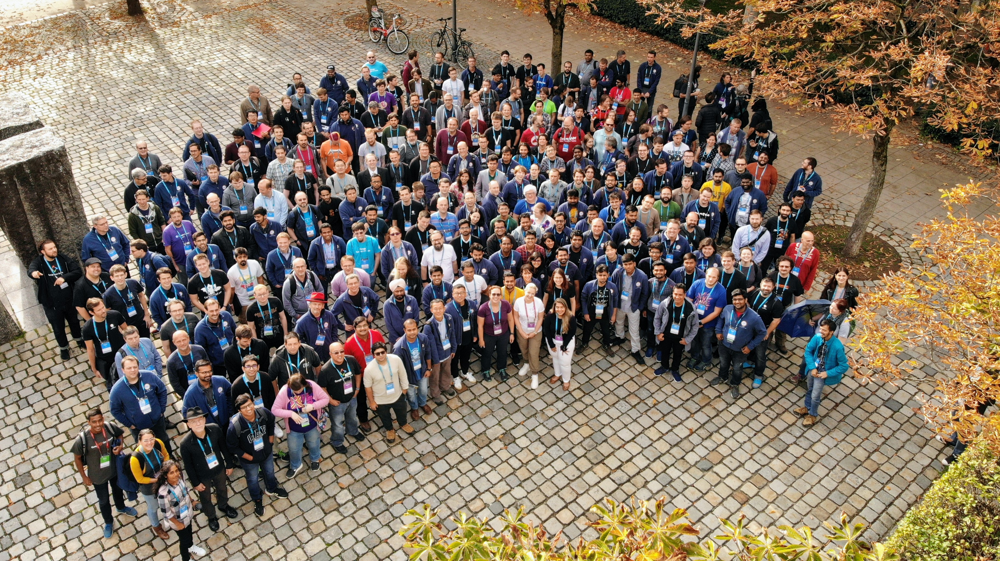
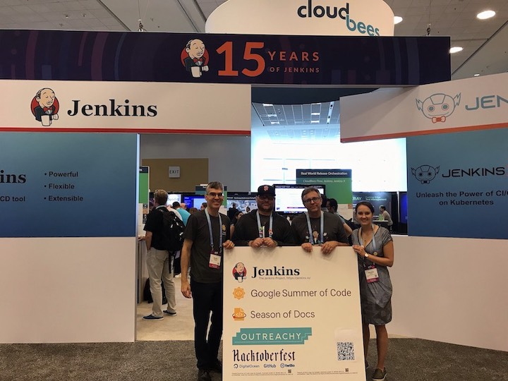
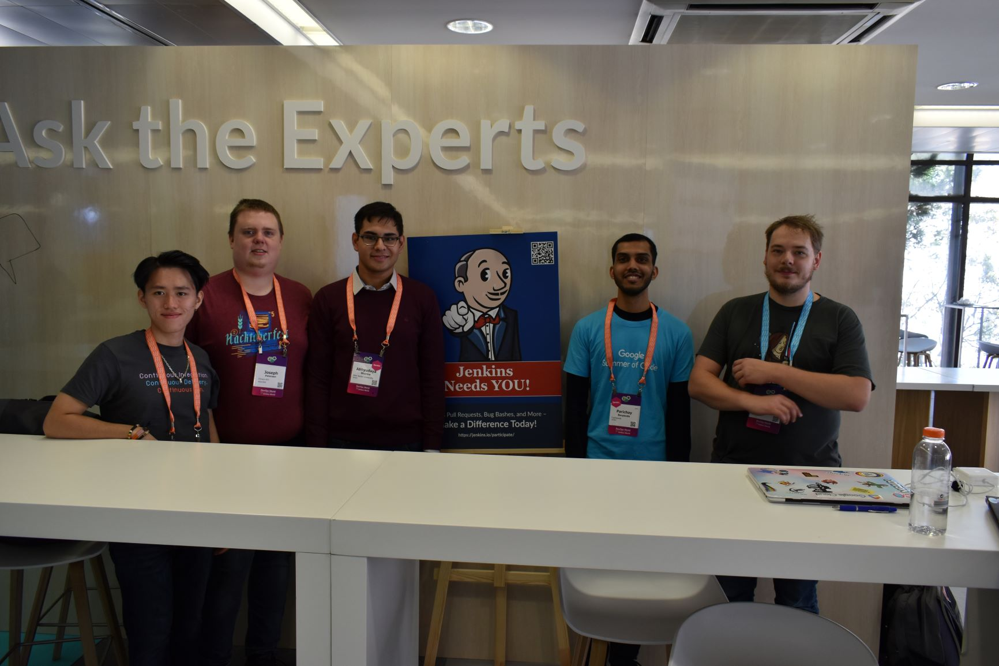

2019 年 Google 编程之夏活动报告

Google 编程之夏活动不仅仅是一个夏日的实习项目，对于组织和一些社区的成员来说，这个活动是他们一整年努力的成果。现在，在里斯本举行的 Devops World | Jenkins World 会议以及最后的回顾会议之后，我们宣布 GSoC 2019 正式画上结束的句号。首先我们感谢所有的参与者：学生们、导师们、主题专家、以及其他一些提出课题构想，参与学生选择，社区联系以及一些后期的讨论与回顾的贡献者们。Google 编程之夏活动是一个大型的活动，如果没有 Jenkins 社区的积极参与此次活动也就无法成行。
在这篇博客里我们想要与各位分享这次活动的成果以及我们从这一年总结的一些经验。
成果
今年成功完成了 5 个 GSoC 课题：角色策略插件性能优化，插件安装管理 CLI 工具/库，working-hours 插件 - UI 优化，具有 Kubernetes 功能的 Apache Kafka 远程处理，GitLab SCM 多分支流水线支持。我们会在后面的内容中讨论一下上面提到的这几个课题。

项目细节
我们在 8 月底举行了最后一次 Jenkins 线上例会的演讲然后 Google 在 9 月 3 日发布了这些成果。最后的这些演讲内容可以从这里找到：第一部分，第二部分，第三部分。我们也在 DevOps World | Jenkins World 旧金山以及 DevOps World | Jenkins World 2019 里斯本会议中发布了2019 Jenkins GSoC 报告。
在下面的章节中，我们对每一个项目做一个简单的总结，第三阶段编码演示文稿的链接以及最后的成品。
角色策略插件性能优化
角色策略插件是 Jenkins 中最广泛被使用的认证插件之一，但因为其架构问题以及对项目角色的正则表达式检查使其没有因性能著称。Abhyudaya Sharma 与他的几位导师：Oleg Nenashev，Runze Xia，Supun Wanniarachchi 一起进行该项目。他为 Jenkins 插件创建了一个基于 JMH 的微基准测试框架，创建微基准测试然后在一些真实场景中得到了 3501% 的提升。然后他继续深入研究创建了一个基于目录的认证策略插件，当权限范围为目录时该插件为 Jenkins 实例提供了更佳的性能。在他的项目中 Abhyudaya 还修复了对 Jenkins 组策略的配置即代码的支持并为 JCasC 插件贡献了一些优化与修复的代码。 - 项目页面 - 发布的博客：Jenkins 微基准测试框架， 引入一个新的目录认证插件，角色策略插件性能优化 - 最终评估：幻灯片，视频 - 源码：角色策略插件，目录认证插件

插件安装管理 CLI 工具/库
Natasha Stopa 正在研究一个新的插件管理 CLI 工具 ，该工具可以统一其他例如 Docker 镜像中的 install-plugin.sh 这样的工具。它还引入了许多新的特性比如 YAML 配置的格式支持，列出可用的升级以及安全性修复。这个新开发的工具最终可以取代刚才提到的的那个工具。Natasha 的导师：Kristin Whetstone，Jon Brohauge，Arnab Banerjee 与许多来自 Platform SIG和 JCasC 插件团队的贡献者们作为利益相关者和项目专家一同参与了这个课题。
- 项目页面
- 发布的博客：alpha 版本发布，第二阶段编码更新
- 最终评估：幻灯片，视频
- 源码：插件管理工具

working-hours 插件 - UI 优化
Jenkins UI 和前端框架在Jenkins项目中成为了一个共同的话题，特别是最近这几个月发布了新的 UX SIG 之后。Jack Shen 与他的导师 Jeff Pearce 正在探索一种新的途径来统一构建 Jenkins 的 Web UI。Jack 更新了运行时间插件 使用的 UI 控件是由标准的 React 库提供的。然后他将他的这些工作经验文档化并创建了使用基于 React UI 的插件模板 - 项目页面 - 发布的博客：working-hours 的 UI 更新，React 插件模板 - 最终评估：幻灯片，视频 - 源码：working-hours 插件，基于 React UI 的 Jenkins 插件模板

具有 Kubernetes 功能的 Apache Kafka 远程处理
Long Le Vu Nguyen 正在为 Apache Kafka 远程插件扩展 Kubernetes 支持。他的导师 Andrey Falco和 Pham vu Tuan 是我们 GSoC 2018 的学生和插件发明者。在这个项目过程中 Long 添加了一个新的代理启动器，该启动器规定了在 Kubernetes 中的 Jenkins 节点使其让它们连接到 master 节点。他还为其创建了一个 Cloud API 接口以及一个新的 Helm 图表，该图表可以将 Jenkins 作为 Kubernetes 中的一个完整的系统，默认启用 Apache Kafka。所有这些特性都发布在了 Apache Kafka 远程插件 2.0 中。 - 项目页面 - Apache Kafka 远程插件 2.0 发布的博客 - 最终评估：幻灯片，视频 - 插件源码

Gitlab SCM 支持多分支流水线
Parichay Barpanda 正在开发具有多分支流水线任务以及基于文件夹组织支持的新的 GitLab 分支源码插件。他的导师是 Marky Jackson-Taulia，Justin Harringa，Zhao Xiaojie 和 Joseph Petersen。该插件扫描项目，并根据提供的的条件导入流水线任务。项目导入后，Jenkins 立即运行基于 Jenkinsfile 脚本的任务然后发送通知到 GitLab 流水线状态。该插件同样提供了 GitLab 服务器配置可以在系统配置或者通过 Jenkins 配置即代码进行配置（JCasC）。在 GitLab 分支源码 1.0 声明获取更多内容。 - 项目页面 - 第三阶段编码演示 - GitLab 分支源码插件，GitLab API 插件

没有完成的项目
今年并非所有的项目都完成了。我们也在 Jenkins 流水线 artifact-promotion 插件和云特性的外部工作区管理插件进行了尝试，但不幸的是这两个项目都在第一阶段编码后即停止了。无论如何，我们在这些领域得到了许多经验与收获。（请参阅链接的 Jira ticket！）我们希望这些故事的某一点能够被 Jenkins 贡献者实现出来。或许 Google 编程之夏 2020 可以？
以组织层面运营 GSoC 项目
这里有一些在我们组织 GSoC 前后的一些幕后的小故事跟大家分享。为了给即将涌入进来的学生们做好准备，我们更新了所有的 GSoC 页面，收录进去了我们这几年运营这个项目的所有知识。我们从 2018 年 10 月份开始准备，此时离项目开始还有很长一段时间。主要的目标是解决在 GSoC 2018 期间得到的一些反馈。
课题构想。我们在 2018 年的最后一个月开始收集课题的构想。我们在 Google 文档准备了课题构想清单，并在文档的表格中追踪了每个课题的所有权情况。每个课题构想都在其 Google 文档中作进一步阐述。我们发现每个课题在定义阶段都非常的复杂，也许他们本身就太复杂了并且也应该完成不了。
自从我们想让所有的课题构想都能用相同的方法编写成文档时，我们创建了一个模板来指导这些贡献者们。大多数课题构想的文档是由组织的管理员或者导师来编写的，但是偶尔也有一个学生提出一个极妙的点子。我们也在那个文档中获取了一些其他信息比如 GitHub 以及 Gitter 账号以及课题的潜在导师清单。我们将所有的课题文档放到了我们的网站上。
导师与学生指导。我们更新了导师信息页面的一些细节是关于我们希望导师们在项目中做哪些事情，包括导师们工作的小时数，甚至我们有一部分专门写了避免利益冲突的内容，当招募了导师之后，我们引导他们访问导师信息页面。
我们同样更新了学生信息页面。我们发现当每一位学生咨询我们相同的问题都是关于报名和参与项目时这个页面节省了我们很大一部分时间。我们只是把这些页面的链接发给他们而不是每次都要去解释这个项目。
应用阶段。在 GSoC 正式开始的几周前，学生们就已经开始接触这个项目。这真的很振奋人心。一些学生甚至在项目官方开始之前就开始着手课题构想了。
课题选择。这一年组织管理团队做了一些非常艰难的决定。面对众多的学生，导师和课题，我们必须要正确数量的并且尝试匹配最有可能成功的课题。我们尝试通知导师团队的同时也在寻求课题的数量，在截止时间之前得到所有导师们的回复是困难的。最终我们寻求的课题数量要少于我们可以添加进来的数量。当我们寻求课题时我们提交了两个数字：一个最小值一个最大值。GSoC 指南说明如下： - 最小值基于一些非常棒的课题数量，他们非常想要在一个夏天的时间内看到这些项目可以取得成功。 - 最大值是一些他们想要这一整个夏天可以指导的可信赖并且非常棒项目的数量。
我们选择了最小数量的课题。所以我们必须做非常艰难的决定：我们必须在“很棒”与“可信赖”的原则之间进行选择。一些原则上来说，非常好的那一个，选择起来很简单，但是对其他的来说，这很困难。我们知道我们无法做到真正的完美，过往的经验中，我们也知道一些学生或者一些导师会因为一些不可控的生活琐事而无法完成整个项目，即使是一些出色的提案亦如是。所以我们必须做出最好的决定，要知道我们选择的一些项目可能不会完成。
社区联系。我们发现社区联系阶段对于每一个课题的成功至关重要。社区联系有困难的课题通常来说不会做的很好。为了让学生们更好的融入进社区中，几乎所有的课题都在特别兴趣小组的指导下进行，这样可以与更多相关人士交流。
沟通。每年我们都有学生通过个人社交工具与导师进行交流。学生们，如果你们正在读这篇文章，请不要给我们通过个人社交工具发送有关课题方面的内容，你不会收到任何额外的照顾。显然，开源化的目的是我们希望所有的讨论都是公开化的，所以学生们需要时刻牢记这一点。2019 年我们使用 Gitter 处理了最多的聊天信息，但是从一名管理员角度来说相比邮箱沟通来说这样有点太碎片化了。并且它很难去搜索消息。聊天室很方便毕竟消息集中一些，但是从一名管理员角度来说，缺少话题功能很难从 Gitter 获得概要信息。最近 Gitter 添加了话题功能（2019 年 11 月）但是在 Android 和 iOS 上并不能使用。在项目尾声我们使用 Zoom 会议并且我们发现使用它工作要比 Google 的 Hangouts 要容易一些。
状态跟踪。另一个很麻烦的事情就是一旦开始后获取每一个课题运行的概况。我们扩展了 Google 表格的用途，在项目期间跟踪表单中的课题与参与者来为课题排名以及追踪课题各阶段的状态（社区联系，编码，等等。）。让这些表格持续更新是一件很有挑战性的工作，每一个课题包括了好几位参与者以及好几个链接。在这件事上消耗的时间让我们发现让这些表格保持更新，准确，完整有一点困难，直到编码阶段开始之前都是这样。
或许一些状态跟踪工具可以帮上忙。我们使用 Jenkins Jira 来跟踪这些课题，每个阶段代表了一个独立的冲刺竞赛。这给成功的课题帮了大忙。在我们的组织里，我们尝试让每个人都在提前截止日的几天完成，因为我们知道会有一些意外因素比如停电，糟糕的天气（甚至在西雅图都有这事儿！），或者其他无法控制的事情，这些或多或少会影响课题数据的提交。我们同样想到截止日跟周末“撞车”的话人们会忘记这些事情，这同样也是危机所在。
回顾。课题尾声，我们同样会举行一个回顾来为以后获取一些新的构想。你可以在这里找到这些笔记。我们已经处理了文档中最重要的一些评论以及明年课题的构想。
奖励
去年，我们想要通过发送纪念品的方式感谢每一位在项目中参与的人。今年，我们收集了所有我们能找到的邮寄地址准备给每一位送上 Jenkins 15 周年纪念版 T 恤以及一些贴纸。这是一个非常棒的时刻。我也同样以个人名义感谢 Alyssa Tong 对我们 T 恤以及贴纸设计上的一些帮助。

导师峰会
每年 Google 会邀请每个组织的两位或多位导师参加 Google 编程之夏导师峰会。这个活动中，数以百计的开源项目维护者以及导师们齐聚一堂对 GSoC，社区管理以及各种工具进行一些非正式会议。今年峰会在慕尼黑举办，Marky Jackson 和 Oleg Nenashev 作为代表参与了此次会议。 除了探讨课题和分享巧克力，我们在那里展示了 Jenkins，发表了简短的讲话以及主持了一个有关 GitHub 自动机器人的非正式会议，我们不能在那里拍摄团队照片，所以试着在这张照片里找到 Oleg 和 Marky 吧：

DevOps World | Jenkins World 中的 GSoC 团队
一般来说我们使用 GSoC 组织的经费和差旅经费来赞助学生们的旅行以及主要跟 Jenkins 相关的活动。今年四名学生参加了在旧金山与里斯本的 DevOps World | Jenkins World 会议。这些学生在社区展位和贡献者峰会上展示了他们的课题，他们的作品在社区获得了非常多的关注！ 非常感谢 Google 和 CloudBees 能让此次旅行能够成行。你可以在这里找到来自 Natasha Stopa 的报告，更多的旅行报告后期奉上。
 
结论
今年，5 个课题成功完成。我们从其他参加的组织那里得到的消息也说明这是一个正常的数字。 早些时间更新 GSoC 页面为我们后期的工作节省了很多时间因为有人联系我们的时候我们不能每次都重复所有的信息。我们发现保持跟进所有的导师们，学生们，课题以及元信息是必须的但又耗时的工作。我们希望有一个工具用来帮我们做这些事情。协调会议以及提醒参与者截止日之前需要完成的工作也是 GSoC 组织工作的一方面，我们需要持续做这件事。 最后，我想再次感谢所有的参与者，没有你们我们不能做到这些。每年都有一些做的很棒工作以及为 Jenkins 社区贡献一些很棒作品的学生给我们留下了很深刻的印象。
GSoC 2020？
是的，会有 Google 编程之夏 2020 这个活动的！我们计划参加也在寻找课题构想，导师以及学生。Jenkins GSoC 页面已经更新了，我们邀请每一个人明年都能参与进来。 - 活动主页面 - GSoC 2020 课题构想 - GSoC 2020 导师招募与课题构想收集 - 学生与导师信息页面